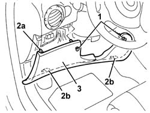

7040A37 FUSE BOX COVER - R R
- Path
- Procedures > 70 FITTINGS > 7040 BODYSHELL INTERIOR TRIMS AND FITTINGS > 7040A PASSENGER COMPARTMENT TRIM > 7040A37 FUSE BOX COVER - R R
- Kind
- repair procedure (removal / refitting; the operation number is the code)
- Applies to
- all engines; all production periods
- Interactive page
- https://sloeber94.github.io/elrnDB-aGt/en/#/125001858
Applies to: all engines; all production periods
 Removing
Removing
 Refitting
Refitting1. Working under the left side of the dashboard trim, undo the bolts securing the fuse cover.
2. Release the top retainer (2a) then the bottom retainers (2b).
3. Recover the fuse cover.

Applies to: all engines; all production periods
Refitting
RemovingCheck that the fuse cover is not damaged.
Position the cover, engaging the retainers.
Tighten the bolts fixing the cover.
Topics that link to this page (19)
- 4110A30 SUPPORT WITH STEERING CONTROL SHAFTS - R+R - INCLUDES R+R STEERING WHEEL
- 5040A80 EXPANSION/CONNECTION PIPE - R R
- 5040B30 EXPANSION VALVE (TUBE ORIFICE) - R+R
- 5040C50 AIR CONDITIONER HEATER RADIATOR - R+R
- 5040C64 A/C MANUAL CONTROL SWITCH (ONE) - R+R
- 5040D76 AIR CONTITIONER DISTRIBUTION FLAP CONTROL MOTOR - R R
- 5040D84 AIR CONDITIONER LEFT HAND AIR MIXER FLAP CONTROL MOTOR - R R
- 5040D86 AIR CONDITIONER RIGHT HAND AIR MIXER FLAP CONTROL MOTOR - R R
- 5040D90 AIR CONDITIONER SYSTEM WIRING BUNDLE - R R
- 5505A10 IGNITION COIL/S - R+R
- 5505C28 INTERGRATED ENGINE BAY AND ABS SYSTEM WIRING - R R
- 5505C34 INTERGRATED INSTRUMENT UNDER FACIA FRONT AIR BAG WIRING - R R
- 5505C41 CABIN WIRING - R R
- 7040A10 L/H OR R/H FRONT SEAT (ONE) - R+R
- 7040A26 STEERING COLUMN TRIM - R+R
- 7040A95 REINFORCEMENT BRACKET ONE LH OR RH BETWEEN FACIA SUPPORT BEAM AND BODY R R
- 7040A97 FACIA TRIM SUPPORT BEAM - R R
- 7040L10 CABIN FLOOR CARPET - R R
- 7040L13 PASSENGER COMPARTMENT FLOOR SOUNDPROOFING - R R